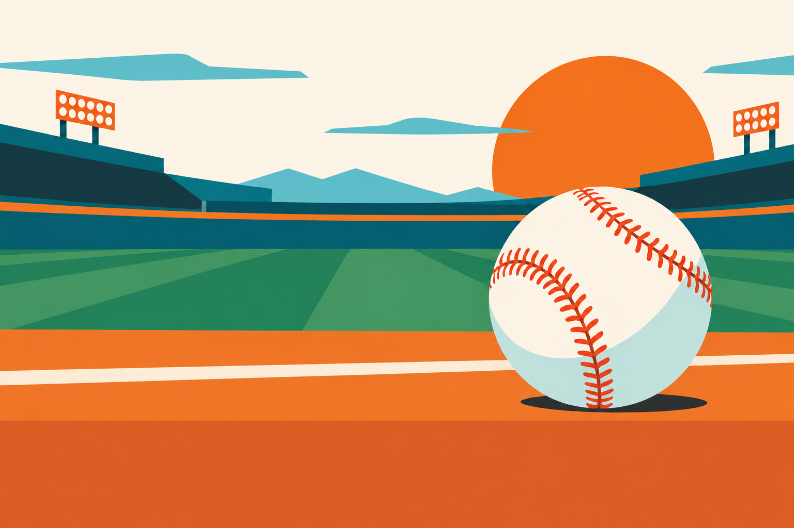
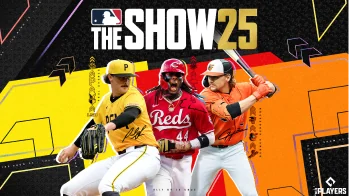

Una historia de pasión y diamantes
El béisbol mexicano se cuenta entrada por entrada.
Explorar la historiaEl contexto
Un deporte con dos temporadas y una sola pasión.
La organización profesional comenzó en 1925 con la Liga Mexicana de verano. Veinte años después nació la liga invernal que con el tiempo se convertiría en la Liga Mexicana del Pacífico. Juntas forman el corazón competitivo del béisbol nacional.
El recorrido
Una línea de tiempo viva
Selecciona una etapa para conocer cómo fue creciendo el juego.
La primera liga profesional
La Liga Mexicana de verano organiza el talento del país y pone las bases de la competencia profesional.
El juego también se juega en invierno
Nace la liga invernal, que más tarde se consolidaría como la Liga Mexicana del Pacífico.
Dos ligas, miles de historias
La LMB y la LMP reúnen estadios, ciudades y aficiones distintas alrededor del mismo diamante.
Una camiseta que cruza fronteras
México participa en la Serie del Caribe, el Clásico Mundial, los Juegos Olímpicos y torneos infantiles internacionales.

El juego también evolucionaLa identidad
De la cancha al mundo digital
La historia sigue escribiéndose en cada estadio, en cada colección y en cada nueva generación que descubre por qué al béisbol se le llama el rey de los deportes.
Pon a prueba lo que sabesTu siguiente entrada
La historia no termina aquí.
Conoce a los equipos que mantienen vivo el diamante mexicano.
Ver la colección